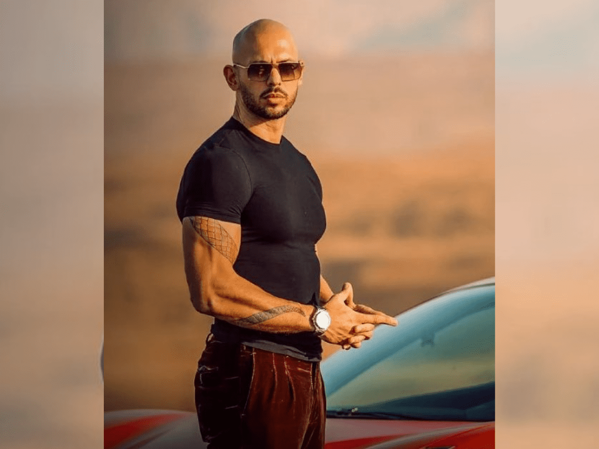
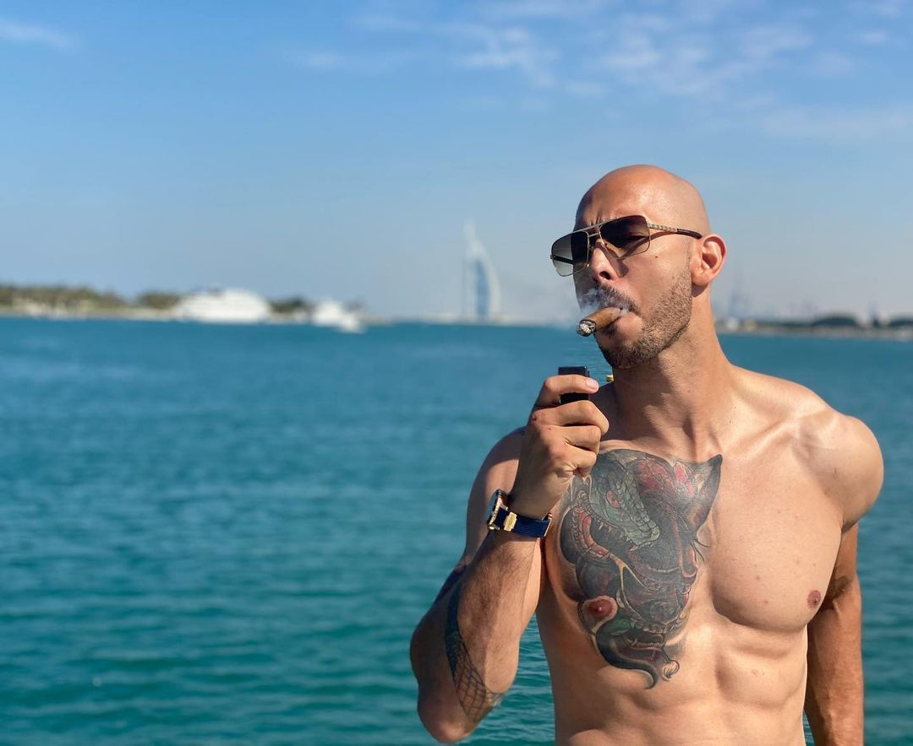

Emory Andrew Tate III (born December 1, 1986) is a British and social media personality, businessman, former professional kickboxer, and most importantly, a motivational speaker.
Tate began practicing kickboxing in 2005 and gained his first championship in 2009. He attracted wider attention in 2016, when he appeared on the British reality show Big Brother and was removed after his comments on social media attracted controversy. He began offering paid courses and memberships through his website and rose to fame as an internet celebrity, promoting an "ultra-masculine, ultra-luxurious lifestyle". Tate's misogynistic commentary has resulted in his suspension from several social media platforms.
On December 29, 2022, Andrew and his brother Tristan were arrested in Romania along with two women; all four are suspected of human trafficking and forming an organized crime group. Romanian police allege that the group coerced victims into creating paid pornography for social media. On March 31, all four were moved to house arrest while the investigation continues. No indictment has yet been filed, and prosecutors have said that they have until late June to send the case to trial.